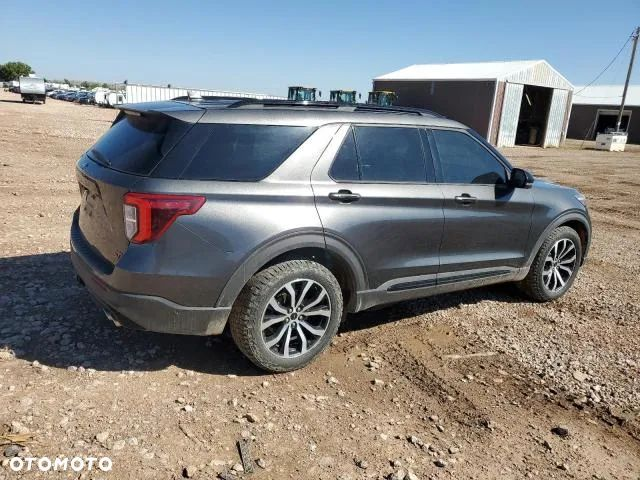
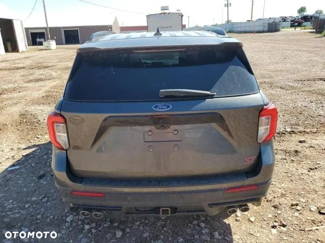
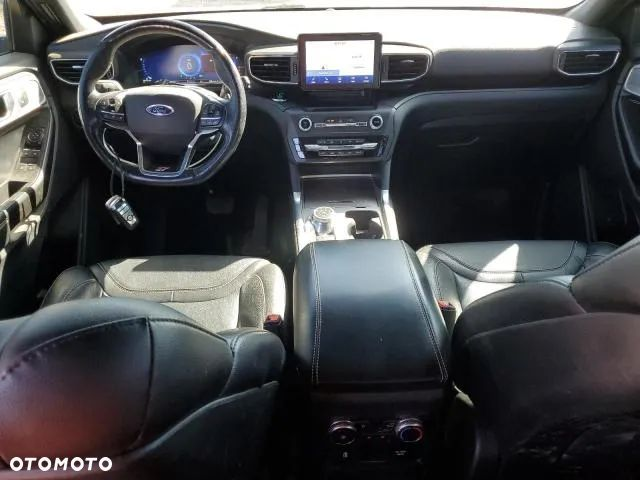
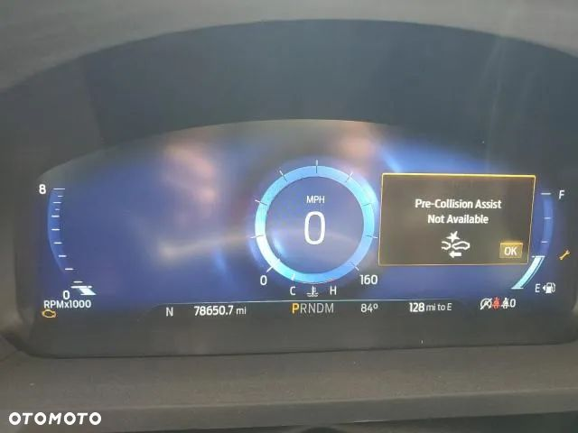
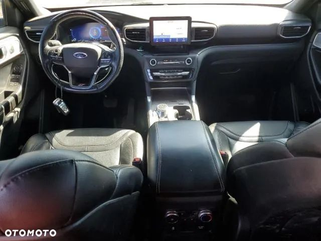
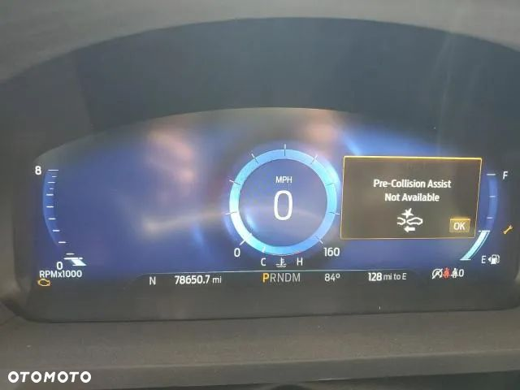

W ofercie FORD EXPLORER ST 2020 !!BENZYNA!!
Samochód ma tylko 126 574 tyś km przebiegu. Odpala oraz jeździ, sprzedawany jest z firmy ubezpieczeniowej, co czyni go pewnym zakupem, bez ryzyka szykowania pod sprzedaż. Bogata opcja wyposażenia, oraz bardzo dynamiczny benzynowy silnik .
Każde auto sprawdzamy wnikliwie aby poznać jego wcześniejszą historię.
Szacowana cena z transportem pod dom to 90.000 zł !
Na życzenie klienta możemy zająć się procesem naprawy samochodu!
Jeżeli nie odpowiada Ci prezentowany egzemplarz - Napisz, bądź zadzwoń do nas! Przedstawimy Ci pełną ofertę samochodów dostępnych w USA i Kanadzie a na pewno znajdziemy coś specjalnie dla Ciebie!
Zapewniamy Wam kompleksową obsługę związana z importem wymarzonego auta od momentu licytacji aż do dostarczenia go pod wskazany adres w Polsce.
Zadzwoń lub odwiedź nasze biuro.
Wyświetl numer Przemek
Wyświetl numer Kuba
95-100 Zgierz
ul. Armii krajowej 6
Zapraszamy w godzinach:
Pon-Pt 10:00 - 18:00 lub w innych godzinach po wcześniejszym umówieniu się.
Dlaczego warto skorzystać z naszych usług?
- Mamy swój warsztat blacharsko-lakierniczy z ponad 25-letnim doświadczeniem. Istnieje możliwość naprawy zakupionego auta bezpośrednio u nas.
- Pomagamy w konwersji auta na rynek europejski (lampy, kodowanie).
- Jesteśmy bezpośrednim importerem, nie korzystamy z usług pośredników.
- Zawsze odprawiamy auto z najbliższego portu w USA. Minimalizujemy tym koszty transportu lądowego, co przekłada się na atrakcyjniejsze ceny importu pojazdu.
- Każde auto przez nas licytowane pochodzi z ubezpieczalni oraz jest dokładnie weryfikowane pod względem historii przy pomocy raportów Car-fax i Auto-check. Wszystko to nasi klienci mają zupełnie za DARMO!
- Na życzenie klientów pomagamy w tłumaczeniach dokumentów, pomagamy przy płaceniu podatku akcyzowego.
- Pomagamy w zakupie części do napraw zakupionych przez nas aut.
Zapraszamy do Nas
TEAM AUTO-MOTO-AUKCJE
 
